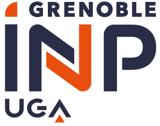

Research Engineer
Tianle GU
Experience
Postdoctoral Researcher / Research Engineer
Lab SIMaP, Grenoble INP
March 2026 - Present
- Leading parallel R&D tracks in fundamental electrohydrodynamic two-phase flow and industrial vapor chamber applications.
- Managing vapor chamber research for high-power electronics cooling, sponsored by Mitsubishi Electric R&D Centre Europe.

Enseignant Vacataire
ENSE3, Grenoble INP
January 2023 - Present
- Gave TD and TP in Heat and Mass Transfer and Thermodynamics (160 H).

Intern, Thermal Engineer
Mitsubishi Electric R&D Centre Europe
March 2022 - August 2022
- Designed and fabricated a calorimeter for transient heat transfer.
Education
PhD
Grenoble INP, Université Grenoble Alpes
January 2023 - January 2026
Thesis title: An experimental study of bubble dynamics and oscillations in the presence of electric fields in a dielectric fluid: deconstructing polarization and Coulomb forces in terrestrial and microgravity environments.
MSc in Fluid Mechanics and Energetics (Double Degree)
ENSE3, Grenoble INP
September 2020 - September 2022

MSc in Energy Engineering and Management (Double Degree)
Instituto Superior Técnico, Université de Lisboa
September 2020 - September 2022

BEng in Nuclear Engineering
Xi'an Jiaotong University
September 2012 - July 2016
Research Projects
Project AEBIO: AC Electrohydrodynamic Bubble Interface Oscillations
April 2025 and March 2026
68ème & 70ème campagne de Vols Paraboliques CNES (VP183 & VP190)
Designed and engineered the AEBIO platform, a modular, flight-certified experimental system for investigating bubble dynamics in terrestrial and microgravity environments.
Selected Publications
Bubble oscillations and dynamics under periodic electric fields
Exp. Thermal and Fluid Science (Jan. 2026)
doi.org/10.1016/j.expthermflusci.2025.111668
Exp. Thermal and Fluid Science (Jan. 2026)
doi.org/10.1016/j.expthermflusci.2025.111668
Combined polarization and electrophoretic influence on bubble dynamics in leaky dielectric fluids
Exp. Thermal and Fluid Science (Jan. 2026)
doi.org/10.1016/j.expthermflusci.2025.111601
Exp. Thermal and Fluid Science (Jan. 2026)
doi.org/10.1016/j.expthermflusci.2025.111601
Toward a complete understanding of quasi-Static bubble growth and departure
Proceedings of the National Academy of Sciences (Apr. 2024)
doi.org/10.1073/pnas.2317202121
Proceedings of the National Academy of Sciences (Apr. 2024)
doi.org/10.1073/pnas.2317202121